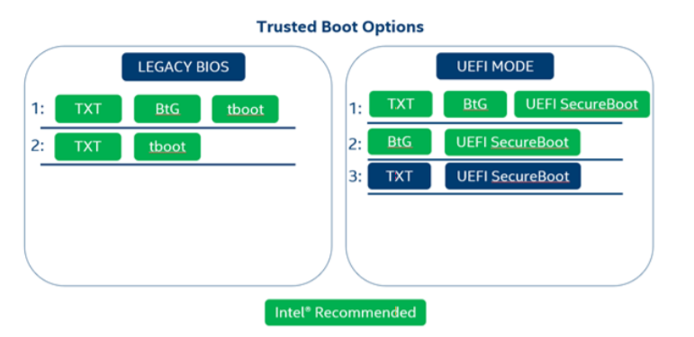

Pre-requisites
Hardware & OS Requirements
Physical Server requirements
- Intel® SecL-DC supports and uses a variety of Intel security features, but there are some key requirements to consider before beginning an installation. Most important among these is the Root of Trust configuration. This involves deciding what combination of TXT, Boot Guard, tboot, and UEFI Secure Boot to enable on platforms that will be attested using Intel® SecL.
Note
At least one "Static Root of Trust" mechanism must be used (TXT and/or BtG). For Legacy BIOS systems, tboot must be used. For UEFI mode systems, UEFI SecureBoot must be used* Use the chart below for a guide to acceptable configuration options. Only dTPM is supported on Intel® SecL-DC platform hardware.

Warning
A security bug related to UEFI mode and Grub2 modules has resulted in some modules required by tboot to not be available on RedHat 8 UEFI systems. Tboot therefore cannot be used currently on RedHat 8. A future tboot release is expected to resolve this dependency issue and restore support for UEFI mode.
Warning
An issue in the latest version of tboot(version 1.9.12) has caused it to be unusable on RHEL 8.3 legacy mode machines. This will be fixed in an upcoming version of tboot. Its is recommeded to use tboot version 1.9.10 for the time being.
OS Requirements
RHEL 8.3OSrhel-8-for-x86_64-baseos-rpmsandrhel-8-for-x86_64-appstream-rpmsrepositories need to be enabled on build machine and remote machines- Date and time should be in sync across the machines
User Access
- The services need to be built & installed as
rootuser. Ensure root privileges are present for the user to work with Intel® SecL-DC.
Note
When using Ansible role for deployment, Ansible needs to be able to talk to remote machines as root user for successful deployment
- All Intel® SecL-DC service & agent ports should be allowed in firewall rules.
Deployment Model

-
Build + Deployment Machine
-
CSP - ISecL Services Machine
-
CSP - Physical Server as per supported configurations
-
Enterprise - ISecL Services Machine